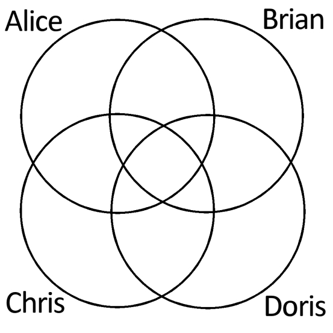
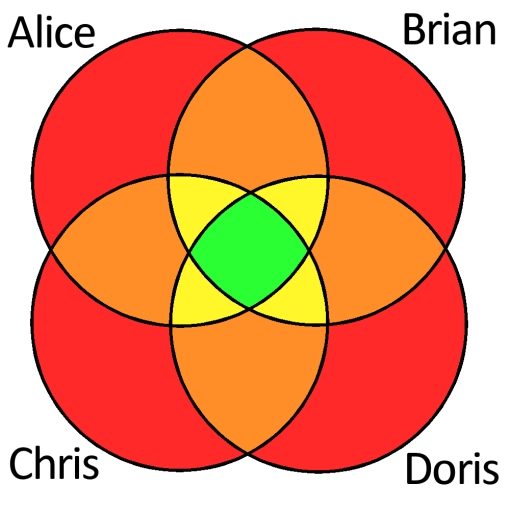
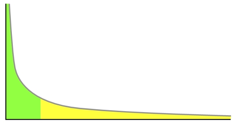

Library Impact Data Project (LIDP)
The Huddersfield team have also been developing recommender systems to generate the "people
who borrowed this, also borrowed…" suggestions in our OPAC and whether or not there are
privacy issues with generating them. As Dave Pattern wrote:
“To generate recommendations for book A, we find every person who's borrowed that book.
Just to simply things, let's say only 4 people have borrowed that book. We then find every
book that those 4 people have borrowed. As a Venn diagram, where each set represents
the books borrowed by that person, it'd look like…

“To generate useful and relevant recommendations (and also to help protect privacy), we set a threshold and ignore anything below that. So, if we decide to set the threshold at 3 or more, we can ignore anything in the red and orange segments, and just concentrate on the yellow and green intersections…

“There'll always be at least one book in the green intersection — the book we're generating
the recommendations for, so we can ignore that.

“If we sort the books that appear in those intersections by how many borrowers they have in
common (in descending order), we should get a useful list of recommendations. For
example, if we do this for "Social determinants of health
(ISBN 9780198565895), we get the
following titles (the figures in square brackets is the number of people who borrowed both
books and the total number of loans for the suggested book)…
- Health promotion: foundations for practice [43 / 1312]
- The helping relationship: process and skills [41 / 248]
- Skilled interpersonal communication: research, theory and practice [31 / 438]
- Public health and health promotion: developing practice [29 / 317]
- sociology of health and illness [29 / 188]
- Promoting health: a practical guide [28 / 704]
- Sociology: themes and perspectives [28 / 612]
- Understanding social problems: issues in social policy [28 / 300]
- Psychology: the science of mind and behaviour [27 / 364]
- Health policy for health care professionals [25 / 375]
“When we trialled generating suggestions this way, we found a couple of issues:
- More often than not, the suggested books tend to be ones that are popular and circulate well already — is there a danger that this creates a closed loop, where more relevant but less popular don't get recommended?
- The suggested books are often more general — eg the suggestions for a book on MySQL might be ones that cover databases in general, rather than specifically just MySQL
“To try and address those concerns, we tweaked the sorting to take into account the total
number of times the suggested book has been borrowed. So, if 10 people have borrowed
book A and book B, and book B has only been borrowed by 12 people in total, we could
imply that there's a strong link between both books.
“If we divide the number of common borrowers (10) with the total number of people who've
borrowed the suggested book (12), we'll end up with a figure between 0 and 1 that we can
use to sort the titles. Here's a list that uses 15 and above as the threshold…
- Status syndrome : how your social standing directly affects your health [15 / 33]
- Values for care practice [15 / 61]
- The study of social problems: seven perspectives [18 / 90]
- Essentials of human anatomy & physiology [15 / 81]
- Human health and disease [15 / 88]
- Social problems: an introduction to critical constructionism [15 / 90]
- Thinking about social problems: an introduction to constructionist perspectives [21 / 127]
- The helping relationship: process and skills [41 / 248]
- Health inequality: an introduction to theories, concepts and methods [20 / 122]
- The sociology of health and illness [29 / 188]
"…and if we used a lower threshold of 5, we'd get…
- Status syndrome : how your social standing directly affects your health [15 / 33]
- What is the real cost of more patient choice? [5 / 12]
- Interpersonal helping skills [5 / 12]
- Coaching and mentoring in higher education : a learning-centred approach [6 / 15]
- Understanding social policy [5 / 13]
- Managing and leading in inter-agency settings [11 / 29]
- Read, reflect, write : the elements of flexible reading, fluent writing, independent learning [5 / 14]
- Community psychology : in pursuit of liberation and well-being [6 / 20]
- Communication skills for health and social care [9 / 32]
- How effective have National Healthy School Standards and the National Healthy School programme been, in contributing to improvements in children's health? [5 / 18]
“If you think of the 3 sets of suggestions in terms of the Long Tail, the first set favours
popular items that will mostly appear in the green ("head") section, the second will be
further along the tail, and the third, even further along.
“As we move along the tail, we begin to favour books that haven't been borrowed as often
and we also begin to see a few more eclectic suggestions appearing (eg the "How effective
have National Healthy School Standards…" literature based study).
“One final factor that we include in our OPAC suggestions is whether or not the suggested
book belongs to the same stock collection in the library — if it does, then the book gets a
slight boost.”